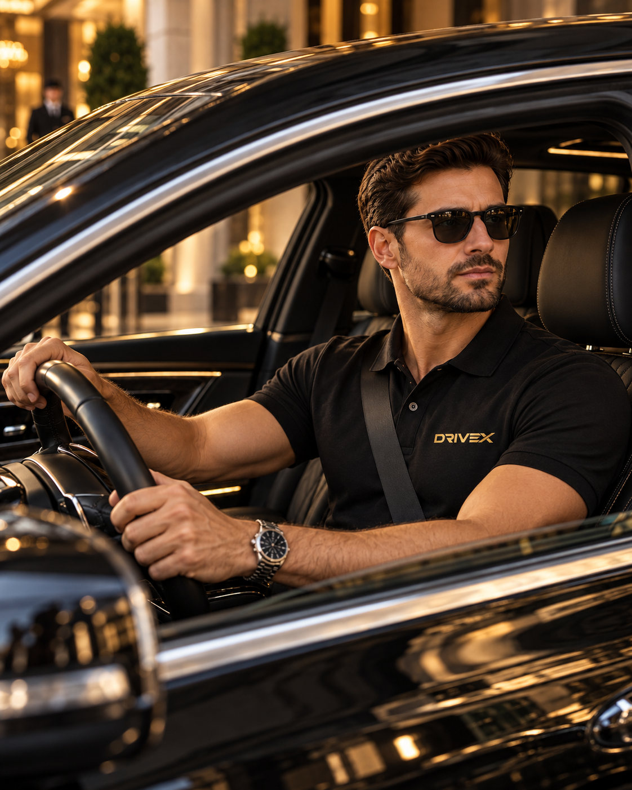
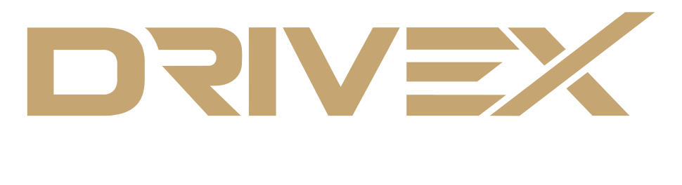
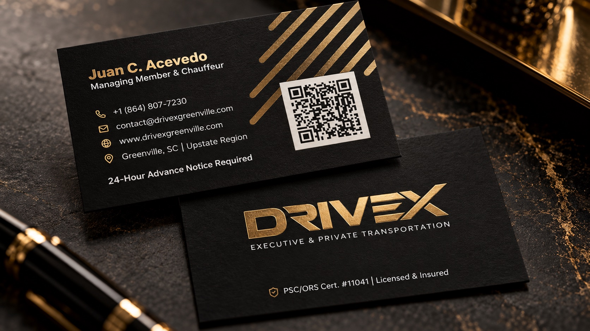
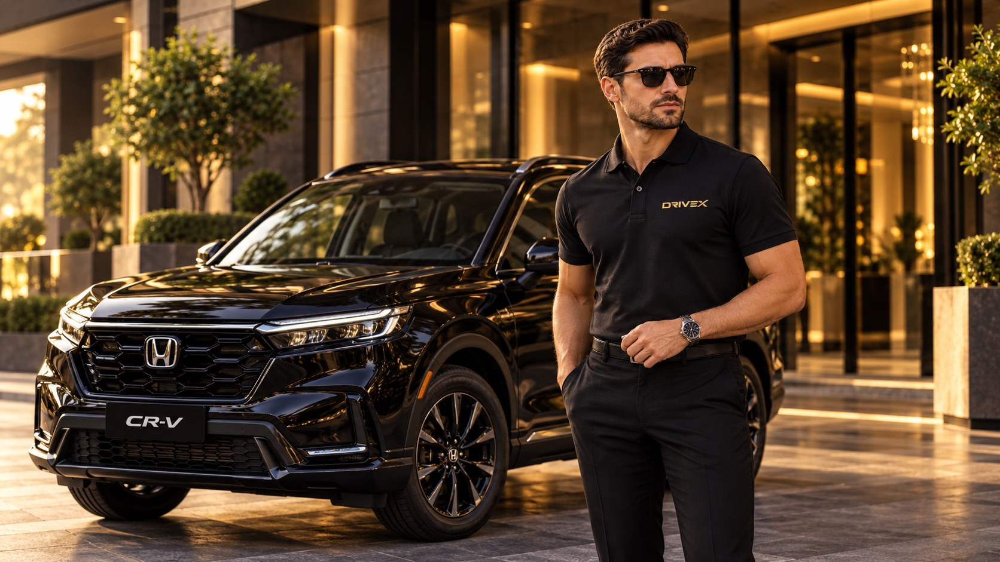
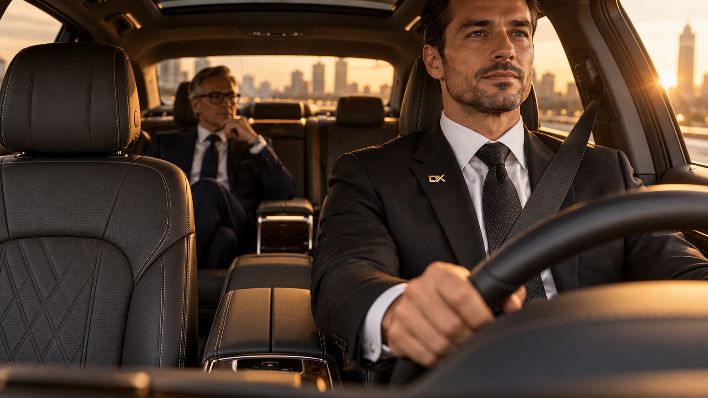
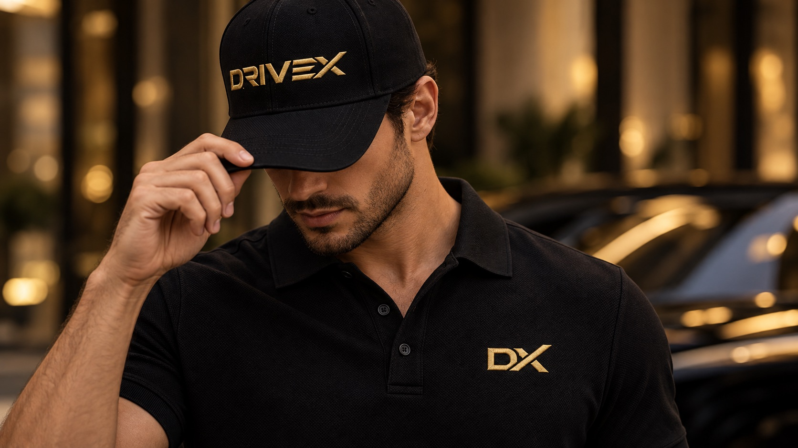
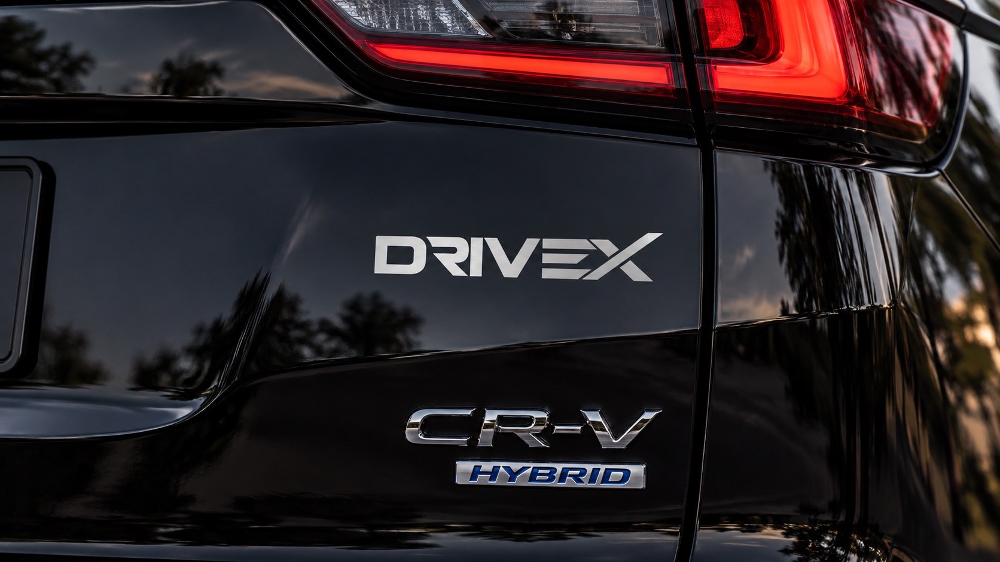

Serenidad
Todo se siente bajo control.

Identidad oficial · V3.1

Manual de marca
y guía de estilo
Octubre 2026
Greenville, SC
Manual de marca · V3.1
01 · Esencia
Drivex convierte cada traslado en un espacio privado: sereno, preciso y discretamente premium.
Todo se siente bajo control.
La información llega primero.
El servicio acompaña, nunca invade.
02 · Arquitectura
La marca madre queda libre para futuras unidades —por ejemplo, Charlotte— sin rediseñar nada.
Drivex Transport LLC · Class C Motor Carrier · SC PSC/ORS Cert. #11041 / Order No. 2026-402.
Marca de cara al mercado para Greenville y la región del Upstate.
contact@drivexgreenville.com · cuelgan de la unidad local porque ahí ocurre la reserva.
Drivex Transport LLC · SC PSC/ORS Cert. #11041 · Licensed & Insured
03 · Nomenclatura
La certificación es un activo de marca: es la barrera de entrada frente al transporte informal y debe leerse como sello de confianza.
Drivex Transport LLC · SC PSC/ORS Cert. #11041 · Licensed & Insured
PSC/ORS Cert. #11041 | Licensed & Insured
04 · Sistema de marca
El logotipo único. “Executive & Private Transportation” es un descriptor complementario y puede omitirse.
Para espacios cuadrados y pequeños.
Solo fondos de tarjetas VIP, banners web y portadas B2B. Tono sobre tono u opacidad reducida. Nunca es un logo.
Ninguna pieza sustituye a otra: esa es la regla que evita la dilución de marca.
05 · Isotipo
Monograma geométrico “DX”: limpio, sólido y estilizado, sin adornos ni elementos ajenos.
El isotipo nunca sustituye al wordmark en papelería, contratos, propuestas o señalética donde se espera el nombre completo.
06 · Construcción
La altura de la “D” define la zona libre en los cuatro lados. Nada debe competir con la firma. El logo debe funcionar a 16 px, en un pin de solapa y en un medallón; el tagline no sobrevive a esos tamaños.

07 · Versiones cromáticas
Lujo / Full Color · #C5A572 en color plano. Piezas premium sobre negro mate o Navy; en impresión, foil dorado.
El dorado no se utiliza sobre blanco ni fondos claros. El contraste también comunica lujo.
08 · Color
Pulsa un color para copiar su HEX.
09 · Uso del color
El dorado es acento: logotipo, filetes finos e íconos. Nunca en grandes áreas rellenas.
10 · Tipografía
Inter construye toda la comunicación de la marca. Fraunces aporta un contraste editorial puntual, reservado para palabras o frases complementarias.
Aa
Títulos, subtítulos, cuerpo, datos, navegación e interfaces. Es la voz constante, clara y funcional de Drivex.
Aa
Palabras o frases breves dentro de títulos editoriales. Siempre en cursiva; nunca sustituye a Inter ni se usa para párrafos.
Regla maestra El logotipo nunca se escribe con estas fuentes: siempre se reproduce desde el arte vectorial oficial.
11 · Jerarquía
Presencia
sin ruido.
Executive transportation
32–48 px / 1.05Información serena, directa y precisa. El lector debe encontrar primero la hora, el lugar, el vehículo y el chofer.
16–20 px / 1.55PSC/ORS CERT. #11041
10–12 px · tracking +14%Sentence case para títulos y mensajes.
Mayúsculas solo en etiquetas cortas y datos legales.
Fraunces Italic solo como complemento editorial breve.
12 · Oro digital
El dorado de Drivex no es un color: es un efecto. Lo produce el foil metálico al reflejar la luz, y ninguna tinta ni valor HEX lo reproduce. Por eso el logotipo se especifica siempre en oro plano #C5A572, y los degradados de esta página son solo una referencia de cómo podría verse el foil impreso. No son una versión del logotipo ni se aplican sobre él; el acabado final se aprueba sobre una muestra física de foil.
Recomendado · uso general
Mayor contraste
Reflejos marcados
13 · Aplicación

14 · Impresión de tarjetas
Especificaciones para producir la tarjeta VIP. Toda prueba se aprueba sobre muestra física, nunca en pantalla.
15 · Antes de imprimir
Ningún tiraje se produce sin aprobar antes una muestra física.
En el papel del tiraje. El Navy se compara con el Pantone físico PMS 2767 C: en imprenta manda el Pantone; en pantalla, el HEX #0B2545.
Muestra física de ambos acabados antes de producir. La lámina de foil se elige del muestrario de la imprenta tomando #C5A572 como referencia visual.
Escanear la muestra física con al menos dos teléfonos distintos. Un QR hecho solo de barniz sobre negro no lo lee ninguna cámara.
Revisar sobre la prueba impresa la cobertura del negro de fondo y que los textos blancos calados se lean sin empastarse.
El cliente aprueba la muestra por escrito antes de producir el tiraje.
16 · Voz
Estándar Ritz-Carlton y NetJets: elegante, respetuosa y altamente profesional.
17 · Redacción
chofer · vehículo · reservación
conductor · carro · pedir un viaje
“Buenas tardes, Sr. Reed. Su chofer llegará a las 3:45 PM.”
“Tarifas fijas, todo incluido. Confirmadas al reservar.”
“Con licencia y seguro. SC PSC/ORS Cert. #11041.”
18 · Mensajes aprobados
Executive & Private Transportation
Drivex Greenville es el servicio de transporte ejecutivo y privado de Drivex Transport LLC, transportista Class C certificado por la Comisión de Servicio Público de Carolina del Sur (PSC/ORS Cert. #11041). Atendemos a viajeros corporativos, pasajeros de aviación privada y clientes de aeropuerto en Greenville y el Upstate, con tarifas fijas, una flota moderna y choferes bilingües.
Se requiere aviso con 24 horas de anticipación. Todas las reservaciones se programan por adelantado.
Tarifas fijas. Su tarifa se confirma al reservar. Sin tarifa dinámica.
Con licencia y seguro. Drivex Transport LLC opera bajo el SC PSC/ORS Cert. #11041.
19 · Protocolo de servicio
El chofer no inicia conversación ni reproduce audio o radio salvo que el pasajero lo solicite. La cabina es un espacio para trabajar o descansar.
“Mantendré la cabina en silencio. Si necesita algo, solo dígame.”
20 · Guion del chofer
“Buenos días, Sr. / Sra. [Apellido]. Soy [Nombre], de Drivex. ¿Me permite su equipaje?”
“Nos dirigimos a [destino], a unos [tiempo] de aquí. ¿La temperatura está bien para usted?”
“Este es un servicio Silent Ride. Mantendré la cabina en silencio para que pueda trabajar o descansar. Si necesita algo, solo dígame.”
Solo para responder o informar algo que afecte el viaje: “Sr. / Sra. [Apellido], hay una demora más adelante. Nuestra nueva hora de llegada es [hora].”
“Hemos llegado, Sr. / Sra. [Apellido]. Le abro la puerta y le entrego su equipaje.”
“Gracias por viajar con Drivex. Que tenga buen [día / vuelo].”
21 · Integridad
No fijar el tagline al wordmark ni presentarlo como el logo.
No redibujar, reescribir, estirar ni rotar.
No contornear ni añadir sombras o degradados. Los degradados dorados son solo una referencia del efecto foil.
No alterar la “X” ni sustituirla por una “X” estándar.
No imprimir la versión dorada sobre fondos blancos o claros.
No usar el patrón como símbolo, avatar o ícono.
No añadir vehículos, llantas, volantes ni iconografía genérica de transporte.
No sustituir el wordmark por el isotipo donde se espera el nombre completo.
22 · Referencia rápida
| Logotipo | Wordmark DRIVEX, mayúsculas, “X” estilizada |
|---|---|
| Tagline (no es logo) | EXECUTIVE & PRIVATE TRANSPORTATION |
| Isotipo | Monograma “DX” — favicon, ícono Moovs, avatares, pin de solapa, medallón |
| Patrón | Líneas diagonales a 37.5°, el ángulo del trazo largo de la “X” — solo fondos |
| Navy Master | PMS 2767 C · #0B2545 · CMYK 100-85-40-45 |
| Navy Deep · Charcoal | #0A192F · #2E2E2E |
| Dorado | #C5A572 en pantalla · foil estampado en caliente en impresión |
| Blanco | #FFFFFF |
| Tipografía | Inter 400 / 500 / 600 · Fraunces Italic 400 |
| Cartulina | Blanca premium 16 pt / 350 g/m², negro a sangre, laminado Soft-Touch mate |
| Texto legal | PSC/ORS Cert. #11041 | Licensed & Insured |
| Web · Email | www.drivexgreenville.com · contact@drivexgreenville.com |
| Redes · Ubicación | @drivexgreenville · Greenville, SC | Upstate Region |
23 · Mockups




24 · Descargas
Logotipo, tipografías y piezas de apoyo listos para usar. Para imprenta y producción, envía siempre los archivos vectoriales: AI, PDF o SVG.
Todos los archivos se descargan en drivexbrand.vercel.app.
Paquete completo del logotipo ZIP · 1.4 MB↓Wordmark, wordmark con descriptor e isotipo DX en oro, blanco, negro, carbón y Navy.
Gratuitas en Google Fonts, para escritorio y web.
Archivos de cada versión y especificaciones para la imprenta.
Patrón diagonal e íconos de contacto.
Para presentaciones y referencia.